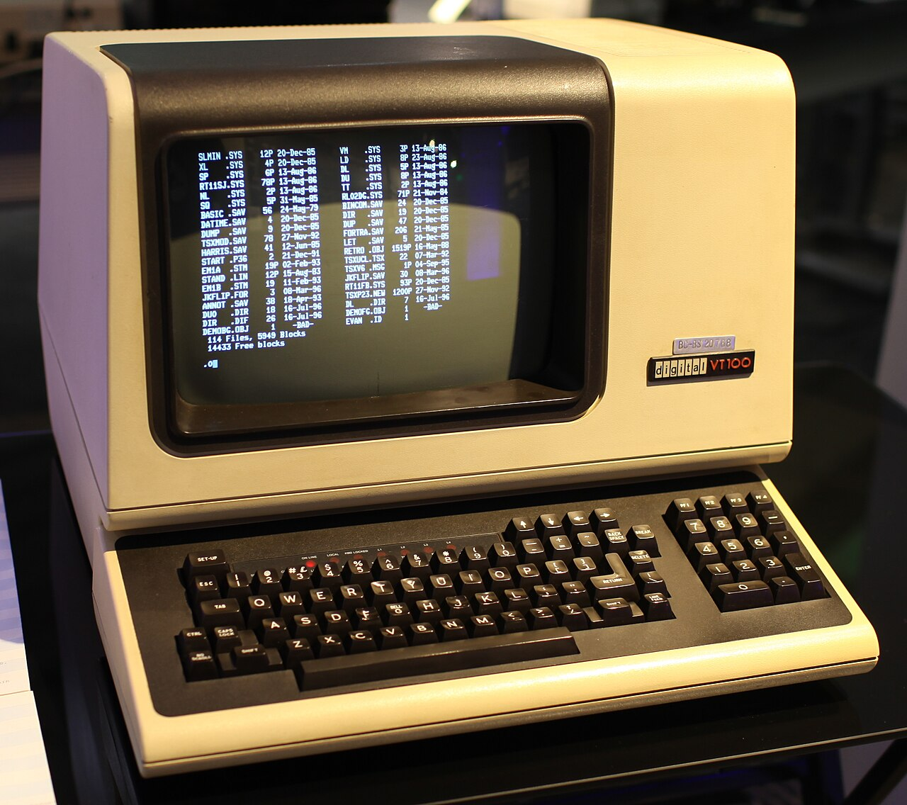

💻 Terminal Linux para biólogos: abrir, contar e buscar nos seus dados¶
Cinco comandos resolvem a maior parte do que você precisa fazer com um arquivo de sequenciamento antes de qualquer análise: ver o que tem, espiar o começo, abrir o comprimido, contar e buscar.
Para quem tem pressa
Arquivos de sequenciamento são grandes demais para programas com janela, como o Excel ou o Bloco de notas, que tentam carregar tudo na memória. O terminal lê o arquivo linha a linha, em fluxo, e mostra só o que você pediu. Com ls -lh você vê os arquivos e seus tamanhos; com head, as primeiras linhas; com zcat, abre um .gz sem descompactar no disco; com wc -l, conta linhas (num FASTQ, linhas ÷ 4 = leituras); e com grep, busca um padrão. O símbolo | (pipe) liga um comando ao outro. No fim da página há um terminal de treino para você testar tudo.
Este é o primeiro MW Toolbox, a série sobre as ferramentas do dia a dia da bioinformática. Ele continua o post anterior, Os arquivos do RNA-Seq: lá vimos o que cada formato guarda; aqui vamos abrir esses arquivos de verdade.
Por que não abrir no Excel?¶
Uma corrida típica de RNA-Seq gera dezenas de milhões de leituras por amostra. Como cada leitura ocupa quatro linhas no FASTQ, uma amostra com 20 milhões de leituras vira um arquivo com 80 milhões de linhas. O Excel aceita no máximo 1.048.576 linhas por planilha, ou seja, cerca de 76 vezes menos. Editores de texto comuns nem chegam a esse limite: tentam carregar o arquivo inteiro na memória e travam.
O terminal funciona de outro jeito. Os comandos do Unix foram pensados para ler um fluxo de texto, uma linha de cada vez, e passar o resultado adiante1. Por isso head mostra o começo de um arquivo de 10 GB tão rápido quanto o de um arquivo de 10 linhas: ele lê só o que precisa e para.


Há ainda um motivo prático: os servidores e clusters onde as análises de verdade rodam não têm tela. Você se conecta a eles por um terminal. Aprender esses comandos no seu computador é o primeiro passo para trabalhar num cluster2.
Um pouco de história: de onde vêm esses comandos
O Unix foi criado no fim dos anos 1960 por Ken Thompson e Dennis Ritchie, nos Bell Labs, e descrito em artigo em 19741. A ideia do pipe, ligar a saída de um programa à entrada do outro, foi proposta por Doug McIlroy e entrou no sistema em 19733. Daí veio a filosofia que você vai usar aqui: programas pequenos, que fazem uma coisa bem feita e se combinam. O Linux, criado por Linus Torvalds em 1991, segue essa mesma tradição, e os comandos deste post funcionam praticamente iguais em Linux, macOS e no WSL do Windows.

Como abrir um terminal¶
Procure por Terminal no menu de aplicativos (no Ubuntu, o atalho é Ctrl+Alt+T). Os comandos deste post já vêm instalados.
Abra Aplicativos → Utilitários → Terminal. Quase tudo funciona igual, com uma exceção: o zcat do macOS pode não ler .gz. Use gzcat no lugar dele, que funciona em qualquer versão.
Instale o WSL (Subsistema do Windows para Linux), que roda um Ubuntu de verdade dentro do Windows4. Abra o PowerShell como administrador e digite:
Reinicie o computador, abra o aplicativo Ubuntu e crie seu usuário. Seus arquivos do Windows ficam acessíveis em /mnt/c/.
Anatomia de um comando¶
Todo comando segue a mesma estrutura: o nome do programa, as opções (que começam com - e mudam o comportamento) e os argumentos (em geral, o arquivo onde ele vai trabalhar).
O $ é o prompt: o terminal avisando que está pronto. Você não digita o $. Opções de uma letra podem ser juntadas: ls -l -h e ls -lh são a mesma coisa. Para ver todas as opções de um comando, use man comando (sai com Q) ou comando --help.
O terminal diferencia maiúsculas de minúsculas
Amostra.fastq.gz e amostra.fastq.gz são arquivos diferentes. E evite espaços nos nomes de arquivo: minha amostra.fastq vira dois argumentos. Prefira minha_amostra.fastq: nomes sem espaços e sem acentos poupam dor de cabeça em qualquer programa6.
Passo 1 · ls: o que tem nesta pasta?¶
$ ls -lh
-rw-r--r-- 1 mw lab 1.2G Oct 30 10:12 amostra_R1.fastq.gz
-rw-r--r-- 1 mw lab 1.2G Oct 30 10:12 amostra_R2.fastq.gz
-rw-r--r-- 1 mw lab 1.9M Oct 30 11:40 contagens.tsv
-rw-r--r-- 1 mw lab 52M Oct 30 09:05 genes.gtf.gz
ls lista os arquivos. A opção -l pede o formato longo (permissões, dono, tamanho, data e nome) e -h mostra o tamanho em unidades legíveis (K, M, G) em vez de bytes. Os arquivos _R1 e _R2 são as duas leituras de cada fragmento num sequenciamento paired-end.
Para se mover entre pastas, dois comandos bastam no começo:
| Comando | O que faz |
|---|---|
pwd |
mostra a pasta onde você está (print working directory) |
cd rnaseq |
entra na pasta rnaseq |
cd .. |
volta uma pasta |
cd ~ |
volta para a sua pasta pessoal |
Use a tecla Tab
Digite cd rna e aperte Tab: o terminal completa o nome. Além de poupar digitação, evita erro de grafia. A seta Up traz de volta os comandos anteriores.
Passo 2 · head: veja só o começo¶
$ head -n 3 contagens.tsv
gene_id ctrl_1 ctrl_2 trat_1 trat_2
TP53 812 790 1640 1702
GAPDH 15230 14987 15102 15511
head mostra as primeiras linhas de um arquivo: 10, se você não disser quantas, ou o número que vier depois de -n. É o jeito mais rápido de conferir se um arquivo é o que você acha que é: se tem cabeçalho, se as colunas estão separadas por tabulação, se os nomes dos genes são símbolos (TP53) ou identificadores do Ensembl (ENSG...).
Dois parentes úteis:
tail -n 3 arquivomostra as últimas linhas. Bom para ver se um arquivo terminou de ser gravado.less arquivoabre o arquivo para rolar com as setas, sem carregar tudo na memória. Digite/TP53para buscar e Q para sair.
Passo 3 · zcat: abra o .gz sem descompactar¶
Arquivos FASTQ quase sempre vêm comprimidos com gzip (extensão .gz), o que reduz o tamanho a cerca de um quarto. Se você usar head direto num .gz, vai ver só símbolos estranhos: são os bytes comprimidos. O zcat descompacta no fluxo, sem gravar nada no disco:
$ zcat amostra_R1.fastq.gz | head -n 4
@A00123:8:H5KJ2DSXY:1:1101:10004:1000 1:N:0:ATCACG
CATTGCTGATCCACAGTTTAGCGA
+
IIIIIHHHGGGFF@@@>>;;88##
Essas quatro linhas são uma leitura completa (veja como ler um FASTQ). O símbolo | é o pipe: ele pega tudo o que o zcat escreveria na tela e entrega ao head, que mostra as 4 primeiras linhas e encerra a leitura.
flowchart LR
A[amostra_R1.fastq.gz<br/>comprimido] --> Z[zcat<br/>descompacta no fluxo]
Z -- "|" --> H[head -n 4<br/>pega 4 linhas]
H --> T[tela]Nunca rode zcat arquivo.fastq.gz sozinho
Sem o | head, o terminal vai despejar os 80 milhões de linhas na tela. Se isso acontecer, aperte Ctrl+C para interromper. Vale para qualquer comando que demore mais do que você esperava.
Passo 4 · wc -l: quantas leituras eu tenho?¶
wc (word count) conta linhas, palavras e caracteres; com -l, só as linhas. Como cada leitura do FASTQ ocupa exatamente 4 linhas, basta dividir por 4: 80.000.000 ÷ 4 = 20 milhões de leituras.
O próprio terminal faz a conta:
E, com um laço for, faz para todas as amostras da pasta de uma vez:
O * é um curinga: *_R1.fastq.gz significa "todo arquivo que termina em _R1.fastq.gz". Contar as leituras é a primeira checagem de qualidade de qualquer projeto: se uma amostra tem muito menos leituras que as outras, você quer saber disso antes de gastar horas alinhando.
Passo 5 · grep: procure um padrão¶
grep mostra as linhas que contêm um padrão de texto. Com -c, em vez de mostrar as linhas, ele conta quantas são. Neste exemplo, o padrão AGATCGGAAGAGC é o início do adaptador Illumina (TruSeq), o pedaço de DNA sintético ligado aos fragmentos no preparo da biblioteca. Quando o fragmento é mais curto que a leitura, o sequenciador lê o fragmento inteiro e continua pelo adaptador. Essas sobras precisam ser removidas antes do alinhamento, no passo de trimming5.
| Opção | O que faz | Exemplo |
|---|---|---|
-c |
conta as linhas que batem | grep -c TP53 contagens.tsv |
-v |
inverte: linhas que não têm o padrão | grep -v "^#" anotacao.gtf (tira comentários) |
-i |
ignora maiúsculas e minúsculas | grep -i tp53 contagens.tsv |
-w |
só a palavra inteira | grep -w TP53 não pega TP53BP1 |
Por que essa contagem é só uma estimativa
O grep -c conta só as leituras que têm os 13 nucleotídeos completos do adaptador. Uma leitura que termina com um pedaço dele (por exemplo, só AGATCGG) não entra na conta, e é justamente nesses pedaços que o adaptador mais aparece. Por isso, para remover adaptadores de verdade, usamos ferramentas como o Cutadapt5, que aceitam correspondências parciais e erros de sequenciamento. Ele está no próximo ciclo da série.
Treine aqui: um terminal no navegador¶
Abaixo há um terminal de treino com uma pasta parecida com a dos exemplos, mas com arquivos pequenos: o FASTQ tem só 10 leituras. Clique nos comandos sugeridos ou digite os seus. Ele entende ls, pwd, head, tail, cat, zcat, wc, grep e o pipe |.
Algumas coisas para observar enquanto treina:
- Compare
head amostra_R1.fastq.gzcomzcat amostra_R1.fastq.gz | head -n 4. O primeiro mostra os bytes comprimidos; o segundo, a leitura. zcat amostra_R1.fastq.gz | grep -c AGATCGGAAGAGCencontra 3 leituras com o adaptador completo. Agora rode sem o-ce olhe a quarta leitura do arquivo (zcat amostra_R1.fastq.gz | head -n 16 | tail -n 4): ela termina comAGATCGGA, um pedaço do adaptador que ogrepnão conta.- Combine mais de dois comandos:
zcat amostra_R1.fastq.gz | head -n 8 | wc -l.
Cola para salvar¶
| Para... | Use |
|---|---|
| ver onde estou | pwd |
| listar arquivos e tamanhos | ls -lh |
| entrar numa pasta / voltar | cd pasta / cd .. |
| ver o começo / o fim | head -n 10 arq / tail -n 10 arq |
| rolar um arquivo grande | less arq (sai com Q) |
abrir um .gz |
zcat arq.gz | head (no macOS, gzcat) |
| contar leituras de um FASTQ | echo $(( $(zcat arq.fastq.gz | wc -l) / 4 )) |
| contar linhas com um padrão | grep -c PADRÃO arq |
| interromper um comando | Ctrl+C |
| ajuda de um comando | man comando ou comando --help |
Para continuar aprendendo
- The Unix Shell, da Software Carpentry: aula gratuita, em inglês, para iniciantes. https://swcarpentry.github.io/shell-novice/
- Introduction to the Command Line for Genomics, da Data Carpentry: os mesmos comandos aplicados a dados de sequenciamento. https://datacarpentry.org/shell-genomics/
- Dez regras simples para começar na bioinformática de linha de comando2: um artigo curto com conselhos práticos de quem já passou por isso.
No próximo post da série, o MW na Prática, vamos aplicar esses comandos a um FASTQ real, baixado de um banco público: contar as leituras, medir o tamanho delas e ler a qualidade base a base.
Referências¶
-
Ritchie DM, Thompson K. The UNIX time-sharing system. Communications of the ACM. 1974;17(7):365–375. doi: 10.1145/361011.361061. ↩↩
-
Brandies PA, Hogg CJ. Ten simple rules for getting started with command-line bioinformatics. PLOS Computational Biology. 2021;17(2):e1008645. doi: 10.1371/journal.pcbi.1008645. ↩↩
-
Ritchie DM. The evolution of the UNIX time-sharing system. AT&T Bell Laboratories Technical Journal. 1984;63(8):1577–1593. doi: 10.1002/j.1538-7305.1984.tb00054.x. ↩
-
Microsoft. Como instalar o Linux no Windows com o WSL. Documentação oficial: https://learn.microsoft.com/pt-br/windows/wsl/install. ↩
-
Martin M. Cutadapt removes adapter sequences from high-throughput sequencing reads. EMBnet.journal. 2011;17(1):10–12. doi: 10.14806/ej.17.1.200. ↩↩
-
Wilson G, Bryan J, Cranston K, Kitzes J, Nederbragt L, Teal TK. Good enough practices in scientific computing. PLOS Computational Biology. 2017;13(6):e1005510. doi: 10.1371/journal.pcbi.1005510. ↩